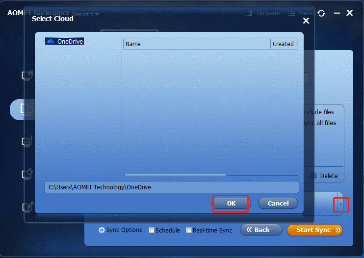

Interview met zus Famke
Inventaris
Aankoopvoorstel
Initiële configuratie
Bronnen
|
Functie |
Voorstel |
|
Operating system |
Windows 10 Home |
|
Webbrowser |
Google Chrome |
|
Printer |
Bluetooth inkt printer |
|
Tekstverwerker |
Word |
|
Presentaties programma |
Powerpoint |
|
Spreadsheet-programma |
Excel |
|
Distributieplatform voor games |
Steam |
|
Speaker |
Compacte luidspreker |
|
Laptop |
HP-laptop voor gamen |
|
muis |
Muis voor gamen |
|
Hardware |
Voorstel |
Verklaring |
|
Processor (CPU) |
Intel Core i7 7700HQ |
De gebruiker wenst een snelle laptop die veel taken
tegelijk kan uitvoeren. Deze heeft 4 cores, dus dit
zal geen probleem zijn. |
|
Grafische kaart (GPU) |
Nvidia GeForce GTX 1060 |
De gebruiker wenst grafisch intensieve games in vrij
scherp beeld te spelen met goede performance. Grafische effecten moesten niet
op ULTRA à 6 GB videokaart werkgeheugen is dus zeker genoeg. |
|
Opslag |
1TB HDD + 256 GB SSD |
De 1TB opslagruimte is nodig om veel grote bestanden
zoals videogames op te slagen. Ook zorgt de SSD er onder andere voor dat de laptop snel
opstart, wat bij de vorige pc een probleem was. |
|
RAM |
2 x SO-DIMM DDR4-2400 à 16GB |
Je zal het probleem niet hebben dat de computer
vertraagd, veel programma’s kunnen tegelijk runnen, netwerk boost, etc. |
|
Aansluitingen |
3 USB aansluitingen Mini Display Port |
Genoeg aangezien we een bluetooth laptop zullen nemen. |
|
Printer |
HP DeskJet 2632 Afdruktech: Inkjet Bluetooth |
Aangezien de gebruiker een laptop wenst, is het handiger
om een bluetooth printer te nemen om aansluitingen te besparen en zodat je
niet telkens je printer uit je laptop hoeft te trekken als je je met je
laptop verplaatst. |
|
Luidsprekers |
Trust Tytan 2.0 Speaker Set |
Voor dezelfde reden als de printer: bluetooth is handiger
bij een laptop dan bedrading. De gebruiker wenst goede geluidskwaliteit en
daar kunnen deze speakers zeker voor zorgen. |
|
Beeldscherm |
120 Hz, Full HD (1080p) |
De gebruiker wenst een scherp beeld en hoge prestaties
in-game. Dankzij de hoge beeldfrequentie kan het beeldscherm deze hoge framerates zeker weergeven. |
|
Laptop |
Deze laptop heeft alles wat de gebruiker wenst. (specs à zie bovenaan) |
De gebruiker wordt als administrator aangeduid. Pincode wordt voor beveiliging gevraagd bij opstarten van de laptop.
Programma’s die gedownload worden: Steam, Nvidia GeForce Experience, Google Chrome, Office 365 programma’s.
Accounts die gebruikt moeten worden: Nvidia account, Office 365, Google account, Steam account, Spotify account, Netflix account, HP account.
Snelkoppelingen: Steam, Google Chrome, Word, Excel, Powerpoint, Nvidia GeForce Expierience, HP Support Assistance.
Systeemvereisten voor Windows 10
Systeemvereisten intensieve game
Laptop
Printer
Speakers
Iemand heeft ontslag genomen bij Van Roey en de afdeling waar de werknemer werkte heeft nog een aantal bestanden van haar nodig die op Onedrive stonden. Het probleem is dat deze niet op de normale manier meer gekopieerd kunnen worden omdat haar account is afgesloten. Ik heb een oplossing gezocht om de bestanden via een andere manier naar een externe schijf te kopiëren.
Bron naar informatie over hoe je deze data recovert.
Linux zal gebruikt moeten worden om de bestanden op de stick te zetten. Dus ik moet de computer laten booten met de USB waar Linux opstaat.
Bron naar informatie over hoe je van een flash USB drive boot
Ik heb de Universal USB Installer gebruikt om Linux erop te installeren via een andere laptop. De Linux-distributie die ik heb gebruikt is Linux Mint. Het is een versie van Linux die lijkt op Windows dus het is gemakkelijk te gebruiken. De verkenner werkt exact hetzelfde dus het zal gemakkelijk zijn om de bestanden te recupereren.
Nu zal ik Linux moeten booten op de computer waar de bestanden opstaan met F9 door de schijf aan te duiden waar Linux opstaat via het bootmenu.
De bestanden in de map Groep Van Roey nv moeten gekopieerd worden naar de USB. Dit is de file explorer van Linux

De bestanden worden gekopieerd naar de USB flash drive.
We hebben de bestanden gerecupereerd.
In het bedrijf vroegen ze me om een manier te zoeken om een backup te maken van persoonlijke gebruikersinstellingen van werknemers bij Van Roey (zoals favorieten, taakbalkinstellingen, etc).
Bron naar informatie over hoe je een user profile back-upt.
Bron naar informatie over hoe je het start menu back-upt.
Mogelijkheden: onedrive, externe schijf?
Bron naar informatie over hoe je iets automatisch back-upt naar onedrive.
Oplossing 1: manueel backup maken van user files via Onedrive
AOMEI voor automatische back-ups
Oplossing 2: automatische back-ups laten maken door back-up programma
Stap 1
Stap 2
Stap 3

Stap 4
Ik test of een andere laptop bepaalde Microsoft user data overneemt als ik de data overplaats naar de andere laptop zijn Appdata. Dit is het geval dus het is een goede manier om geregeld back-ups te maken van user files.